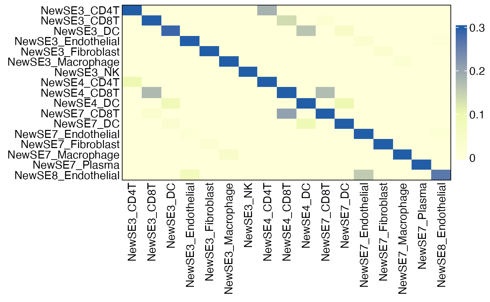

Identifying SE-Specific Cell States via Leave-One-Sample-Out Cross-Validation
Source:vignettes/Discovery_SE_CellStates.Rmd
Discovery_SE_CellStates.RmdOverview
To identify cell states specifically enriched in each SE and conserved across discovery samples, we can perform leave-one-sample-out cross-validation (LOOCV). This procedure builds upon the NMF Model Development for Spatial Ecotype Recovery from Single-Cell and Spatial Transcriptomics Data. In each LOOCV iteration, an NMF model is trained using all but one sample and then applied to predict cell state labels in the held-out sample. The enrichment of each cell state within each SE is quantified based on its ability to correctly assign cells to that SE, measured by F1 score.
A cell state is considered SE-specific if 1) Its F1 score for the assigned SE is the highest across all SEs; 2) The difference between the top F1 score and the second-highest F1 score exceeds a predefined threshold.
In this tutorial, we will demonstrate this procedure using two samples profiled by Vizgen MERSCOPE.
First load required packages for this vignette
Loading data
Load gene expression matrix
## Read the expression matrix for the first sample
scdata <- fread("https://spatialecotyper.stanford.edu/inc/inc.public.vignettes.php?file=Melanoma1_subset_counts.tsv.gz",
sep = "\t", header = TRUE, data.table = FALSE)
rownames(scdata) <- scdata[, 1] ## set the first column as row names
scdata <- scdata[, -1] ## drop the first column
scdata <- NormalizeData(scdata) ## Normalize the expression matrix
## Read the expression matrix for the second sample
scdata2 <- fread("https://spatialecotyper.stanford.edu/inc/inc.public.vignettes.php?file=CRC2_subset_counts.tsv.gz",
sep = "\t", header = TRUE, data.table = FALSE)
rownames(scdata2) <- scdata2[, 1] ## set the first column as row names
scdata2 <- scdata2[, -1] ## drop the first column
scdata2 <- NormalizeData(scdata2) ## Normalize the expression matrix
## Combine the two expression matrices
genes <- intersect(rownames(scdata), rownames(scdata2))
scdata <- cbind(scdata[genes, ], scdata2[genes, ])
head(scdata[, 1:5])## HumanMelanomaPatient1__cell_3655 HumanMelanomaPatient1__cell_3657
## PDK4 0.000000 4.221184
## TNFRSF17 0.000000 0.000000
## ICAM3 0.000000 0.000000
## FAP 3.552438 0.000000
## GZMB 0.000000 0.000000
## TSC2 0.000000 0.000000
## HumanMelanomaPatient1__cell_3658 HumanMelanomaPatient1__cell_3660
## PDK4 3.208945 0
## TNFRSF17 0.000000 0
## ICAM3 0.000000 0
## FAP 0.000000 0
## GZMB 0.000000 0
## TSC2 0.000000 0
## HumanMelanomaPatient1__cell_3661
## PDK4 0
## TNFRSF17 0
## ICAM3 0
## FAP 0
## GZMB 0
## TSC2 0Load cell type and SE annotations
## Load the single-cell meta data derived from MultiSpatialEcoTyper analysis
scmeta <- read.table("https://spatialecotyper.stanford.edu/inc/inc.public.vignettes.php?file=MultiSE_metadata_final.tsv",
sep = "\t", header = TRUE, row.names = 1)
scmeta$SE[is.na(scmeta$SE)] = "NonSE" ## cells with NA predictions were assigned into the nonSE group
## Matches the row names of meta data and column names of expression matrix
cells <- intersect(colnames(scdata), rownames(scmeta))
scdata <- scdata[, cells]
scmeta <- scmeta[cells, ]
head(scmeta[, c("Sample", "CellType", "SE")])## Sample CellType SE
## HumanMelanomaPatient1__cell_3655 SKCM Fibroblast SE7
## HumanMelanomaPatient1__cell_3657 SKCM Fibroblast SE1
## HumanMelanomaPatient1__cell_3658 SKCM Fibroblast SE1
## HumanMelanomaPatient1__cell_3660 SKCM Fibroblast SE1
## HumanMelanomaPatient1__cell_3661 SKCM Fibroblast SE7
## HumanMelanomaPatient1__cell_3663 SKCM Fibroblast SE7Leave-one-sample-out cross validation
SpatialEcoTyper defines SEs based on spatial co-variation of cell states across cell types and samples. However, not all cell states associated with an SE are necessarily specific to that SE. To identify SE-specific and conserved cell states, we perform LOOCV by iteratively: 1) Training NMF models on all but one sample; 2) Predicting SE assignments in the held-out sample. The LoocvPredict function performs this procedure and returns predicted SE labels for all cells.
loocv_preds = LoocvPredict(scdata = scdata, scmeta = scmeta,
Sample = "Sample", SE = "SE",
CellType = "CellType",
repeats = 1, ncores = 16)Note: The default parameters in LoocvPredict are optimized for pan-cancer SEs (Zhang et al., Nature 2026). For user-defined datasets, parameter tuning is recommended:
-
repeats: number of model training iterations (recommended: ≥30 for robust results) -
downsample: number of cells sampled for training (recommended: ≥2500; larger values generally improve robustness) -
nfeature: number of variable genes selected per cell type for defining cell states, which should be tailored to the dataset.
Identifying SE-specific cell states
After LOOCV, we compare original SE assignments with predicted labels. The ComputeMetrics function computes pairwise metrics (F1, F2, precision, or recall) across SE-associated cell states.
## Compute F1 matrix
F1s = ComputeMetrics(loocv_preds, SE = "SE", Pred = "cvPred",
CellType = "CellType", Sample = "Sample", metric = "F1")
# ## Visualize the F1 scores before filtering
# HeatmapView(F1s, c(0, 0.1, 0.3))We then define specificity based on:
- Maximum F1 score corresponds to the assigned SE
- Difference between top two F1 scores exceeds 0.1
Cell states that meet these criteria are considered SE-specific and conserved across samples in our analysis. Cell states that do not meet these criteria could be broadly distributed across multiple SEs, or not conserved across samples. Such states are excluded from SE-specific analyses but may still represent biologically meaningful programs shared across microenvironments.
## Filter for the specific cell states and visualize the F1 matrix
delta <- apply(F1s, 1, function(x) {
x <- sort(x, decreasing = TRUE)
x[1] - x[2]
})
idx = delta>0.1 & apply(F1s, 1, which.max)==1:nrow(F1s) ## Criteria for specificity
gg = F1s[idx, idx]
idx = sort(rownames(gg))
gg = gg[idx, idx]
HeatmapView(gg, c(0, 0.1, 0.3))
SE_cellstates = rownames(gg)
SE_cellstates ## SE-specific cell states## [1] "SE3_CD4T" "SE3_CD8T" "SE3_DC" "SE3_Endothelial"
## [5] "SE3_Fibroblast" "SE3_Macrophage" "SE3_NK" "SE4_CD4T"
## [9] "SE4_CD8T" "SE4_DC" "SE7_CD8T" "SE7_DC"
## [13] "SE7_Endothelial" "SE7_Fibroblast" "SE7_Macrophage" "SE7_Plasma"
## [17] "SE8_Endothelial"Note: This tutorial uses two small datasets for demonstration purposes only. As a result, the identified spatial ecotypes (SEs) and cell states may not generalize due to the limited sample size. We recommend applying this workflow to larger, well-powered datasets and validating findings using independent or held-out data.
Because model training involves stochastic subsampling of cells, we further recommend repeating the LOOCV procedure multiple times with different random seeds to ensure robustness. For each repetition, compute performance metrics (e.g., F1 scores) and average them across runs.
Finally, NMF model training is computationally intensive, and the full LOOCV procedure can be time-consuming. To improve efficiency, we recommend running training jobs as Slurm array jobs and allocating sufficient computational resources (e.g., CPU cores) to each task. An example Slurm array script is provided below.
run_loocv_pred.R
# ============================================================
# Demo script for LOOCV analysis using LoocvPredict (do not run as-is without setup)
# Designed for Slurm array jobs: one run per task
# ============================================================
# ---- Parse command-line argument (task index) ----
args <- commandArgs(trailingOnly = TRUE)
if (length(args) < 1) {
stop("Usage: Rscript run_loocv_pred.R <task_id>")
}
i <- as.integer(args[1])
if (is.na(i)) {
stop("Error: <task_id> must be an integer.")
}
message("LOOCV iteration: ", i)
# ---- Load required libraries and data (user-defined) ----
library(SpatialEcoTyper)
# scdata <- ...
# scmeta <- ...
# ---- Run ----
loocv_preds = LoocvPredict(scdata = scdata, scmeta = scmeta,
Sample = "Sample", SE = "SE",
CellType = "CellType",
repeats = 1, ncores = 32)
# ---- Save output ----
saveRDS(loocv_preds, paste0("path/to/SE_loocv_preds_", i, ".rds"))
F1s = ComputeMetrics(loocv_preds, SE = "SE", Pred = "cvPred",
CellType = "CellType", Sample = "Sample", metric = "F1")
saveRDS(F1s, paste0("path/to/SE_loocv_preds_", i, "_F1_matrices.rds"))submit_slurm_jobs_run_loocv_pred.sh
Next step
Following the identification of SE-specific cell states, users can recover spatial ecotypes from held-out single-cell datasets (e.g., scRNA-seq or single-cell spatial transcriptomics), using the model derived in Tutorial 3. The recovered spatial ecotypes can then be validated by assessing the co-occurrence of cell states within each SE, as described in Tutorial 5 and Tutorial 6, focusing on SE-specific cell state assignments.
Session info
The session info allows users to replicate the exact environment and identify potential discrepancies in package versions or configurations that might be causing problems.
## R version 4.4.1 (2024-06-14)
## Platform: aarch64-apple-darwin20
## Running under: macOS 26.4.1
##
## Matrix products: default
## BLAS: /Library/Frameworks/R.framework/Versions/4.4-arm64/Resources/lib/libRblas.0.dylib
## LAPACK: /Library/Frameworks/R.framework/Versions/4.4-arm64/Resources/lib/libRlapack.dylib; LAPACK version 3.12.0
##
## locale:
## [1] en_US.UTF-8/en_US.UTF-8/en_US.UTF-8/C/en_US.UTF-8/en_US.UTF-8
##
## time zone: America/Los_Angeles
## tzcode source: internal
##
## attached base packages:
## [1] parallel stats graphics grDevices utils datasets methods
## [8] base
##
## other attached packages:
## [1] SpatialEcoTyper_1.0.3 RANN_2.6.2 Matrix_1.7-0
## [4] dplyr_1.1.4 data.table_1.16.0 NMF_0.28
## [7] Biobase_2.64.0 BiocGenerics_0.50.0 cluster_2.1.6
## [10] rngtools_1.5.2 registry_0.5-1 Seurat_5.1.0
## [13] SeuratObject_5.0.2 sp_2.1-4
##
## loaded via a namespace (and not attached):
## [1] RcppAnnoy_0.0.22 splines_4.4.1 later_1.3.2
## [4] R.oo_1.26.0 tibble_3.2.1 polyclip_1.10-7
## [7] fastDummies_1.7.4 lifecycle_1.0.4 sf_1.1-0
## [10] doParallel_1.0.17 globals_0.16.3 lattice_0.22-6
## [13] MASS_7.3-60.2 magrittr_2.0.3 plotly_4.10.4
## [16] sass_0.4.9 rmarkdown_2.28 jquerylib_0.1.4
## [19] yaml_2.3.10 httpuv_1.6.15 sctransform_0.4.1
## [22] spam_2.10-0 spatstat.sparse_3.1-0 reticulate_1.39.0
## [25] cowplot_1.1.3 pbapply_1.7-2 DBI_1.3.0
## [28] RColorBrewer_1.1-3 abind_1.4-5 Rtsne_0.17
## [31] R.utils_2.12.3 purrr_1.0.2 circlize_0.4.16
## [34] IRanges_2.38.1 S4Vectors_0.42.1 ggrepel_0.9.6
## [37] irlba_2.3.5.1 listenv_0.9.1 spatstat.utils_3.1-0
## [40] units_1.0-1 goftest_1.2-3 RSpectra_0.16-2
## [43] spatstat.random_3.3-1 fitdistrplus_1.2-1 parallelly_1.38.0
## [46] pkgdown_2.1.0 leiden_0.4.3.1 codetools_0.2-20
## [49] tidyselect_1.2.1 shape_1.4.6.1 matrixStats_1.4.1
## [52] stats4_4.4.1 spatstat.explore_3.3-2 jsonlite_1.8.8
## [55] GetoptLong_1.0.5 e1071_1.7-16 progressr_0.14.0
## [58] ggridges_0.5.6 survival_3.6-4 iterators_1.0.14
## [61] systemfonts_1.1.0 foreach_1.5.2 tools_4.4.1
## [64] ragg_1.3.2 ica_1.0-3 Rcpp_1.0.13
## [67] glue_1.7.0 gridExtra_2.3 xfun_0.52
## [70] withr_3.0.1 BiocManager_1.30.25 fastmap_1.2.0
## [73] boot_1.3-30 fansi_1.0.6 spData_2.3.4
## [76] digest_0.6.37 R6_2.5.1 mime_0.12
## [79] wk_0.9.5 textshaping_0.4.0 colorspace_2.1-1
## [82] scattermore_1.2 tensor_1.5 spatstat.data_3.1-2
## [85] R.methodsS3_1.8.2 utf8_1.2.4 tidyr_1.3.1
## [88] generics_0.1.3 class_7.3-22 httr_1.4.7
## [91] htmlwidgets_1.6.4 spdep_1.4-2 uwot_0.2.2
## [94] pkgconfig_2.0.3 gtable_0.3.5 ComplexHeatmap_2.20.0
## [97] lmtest_0.9-40 htmltools_0.5.8.1 dotCall64_1.1-1
## [100] clue_0.3-65 scales_1.3.0 png_0.1-8
## [103] spatstat.univar_3.0-1 knitr_1.48 rstudioapi_0.16.0
## [106] reshape2_1.4.4 rjson_0.2.22 nlme_3.1-164
## [109] proxy_0.4-27 cachem_1.1.0 zoo_1.8-12
## [112] GlobalOptions_0.1.2 stringr_1.5.1 KernSmooth_2.23-24
## [115] miniUI_0.1.1.1 s2_1.1.9 desc_1.4.3
## [118] pillar_1.9.0 grid_4.4.1 vctrs_0.6.5
## [121] promises_1.3.0 xtable_1.8-4 evaluate_0.24.0
## [124] magick_2.8.5 cli_3.6.3 compiler_4.4.1
## [127] rlang_1.1.4 crayon_1.5.3 future.apply_1.11.2
## [130] classInt_0.4-11 plyr_1.8.9 fs_1.6.4
## [133] stringi_1.8.4 viridisLite_0.4.2 deldir_2.0-4
## [136] gridBase_0.4-7 munsell_0.5.1 lazyeval_0.2.2
## [139] spatstat.geom_3.3-2 RcppHNSW_0.6.0 patchwork_1.2.0
## [142] future_1.34.0 ggplot2_3.5.1 shiny_1.9.1
## [145] highr_0.11 ROCR_1.0-11 igraph_2.0.3
## [148] bslib_0.8.0